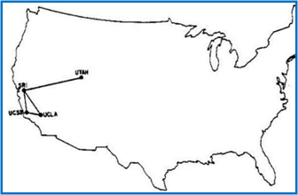
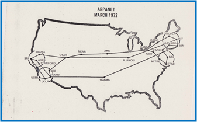
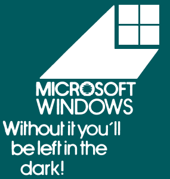
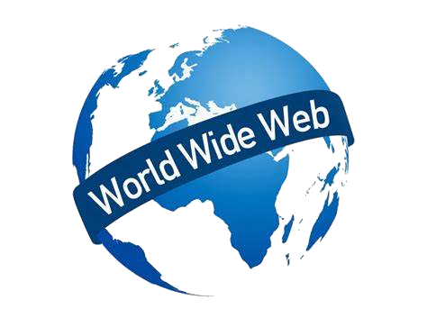
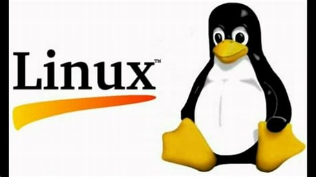
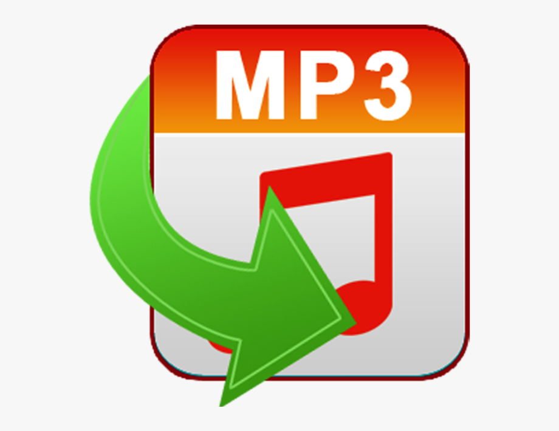

1950s
|
- Emergence of technology that would lead to the emergence of World-wide-web decades later
- Sputnik 1 launched the first satellite in human history in 1957
- Advanced Research Projects Agency (ARPA) was introduced under President Eisenhower in response to Sputnik1
- Invention of the Modem enabled communication between computers – the first proper modem presented to the left in 1959
|
1960s

|
- 1962 the Bell 103 type modem offered full form models with speeds of 300 bit/s
- First data packet sent
- ARPAnet was conceived and introduced in the United States
- Aiming to allow a computer to connect with more than one computer
- ARPAnet was developed in 1969 which connected University of California
Santa Barbara, Stanford Research Institute, UCLA's Network
Measurement Center and University of Utah. As seen above.
|
1970s
 |
- The ARPAnet expanded as seen in the image to the right
- Robert E Khan credited as the ‘father of the internet’ along with Vint Cerf developed the TCP/IP system
- They referred to this as the internet a TCP/IP system
- Ray Tomlinson presented and sent the first email in 1971 – introducing the @ feature for email addresses
|
1980s


|
- In 1983 Domain-Name-System (DNS) was created and essentially created a
‘hierarchy system of domains/hostnames and IP addresses’ which would make the internet more used friendly.
- In 1983 Microsoft launched Windows – a next generation graphic user interface
- The DNS system meant one could enter a domain name and the DNS system would connect to the associated IP address (Pramatarov, 2022)
- In 1989 the World-Wide-Web was created by Tim Berners-Lee, pictured to the right, assisted by Robert Cailliau, they created a whole system that worked together.
- The internet was the connection of computers, the World Wide Web was what one could do with the internet connections.
- He is accredited with the creation of:
- HTML – a language for creating webpages, linking files and webpages
- The first web server –a program to share web pages and files
- HTTP – enabling computers to communicate with each other
- The first web browser – a means to search, traverse and use the world wide web
- This time marks the creation of modern internet use through the creation of the World Wide Web.
|
1990s


|
- Linux an open source operating system is created in 1991 by Linus Torvalds
- The world wide web is made available to the public in this same year
- E-commerce emerged with Amazon in 1994 & E-bay in 1995
- 2 companies that would enjoy massive growth in the coming decades
- The first newspaper article appears online from the Telegraph in 1995
- Google launched in 1998
- Throughout the nineties technology appears enabling further online growth
- MP3 –a means of compressing a sound sequence into a very small file, to enable digital storage and transmission
- VOIP - Voice over Internet Protocol
- Blogs appear – informal webpage/site that shares thoughts and opinions
- Mosaic browser – a freeware browser for accessing files, graphics & documents on the web
- In 1996 Nokia released the first mobile phone with internet access – the Nokia 9000 communicator
|
2000s |
- 2001 – mobile phones meet the internet connecting with 3g networks
- The internet moves from research to commerce
- The emergence of social media and the era of digital content takes off
- Creative commons & Wikipedia created in 2001
- In 2002 X-box Live is launched – an online multiplayer gaming and digital media delivery service
- In 2004 Facebook was created
- In 2005 Bebo, Google Maps & YouTube launched
- In 2006 WikiLeaks, PlayStation Network, 3 YouTube like porn sites & Twitter emerged
- In 2007 the iPhone launched by Steve Jobs & Netflix begins its streaming service
- Goggle Chrome & HTML5 emerged in 2008
- In 2009 WhatsApp launched
- The end of this decade saw the mobile smartphone begin its domination of the market
|
2010s |
- China’s own social media takes off
- 2010 – WikiLeaks release video footage of US soldiers shooting dead 18 civilians from a helicopter in Iraq
- WikiLeaks would play a major influence in politics over the decade
- 2010 Instagram Launches
- Social media plays a prominent role in the Arab Spring protests – accusation of engineered by foreign interests
- The internet goes global
- 2012 – Julian Assange seeks refuge in the Ecuadorian embassy in London for seven years
till 2018 before being imprisoned in Belmarsh Prison
- 2013 Edward Snowden releases information on mass surveillance programs
- Snowden is given the Sam Adams Award - joining Assange, Manning & Binney as notable winners. The award named after a Vietnam whistleblower
- Gamergate emerges in 2014 with computer nerds and social justice wars having a spat that would define the culture wars & identity politics
- 2016 Trump is elected after the Brexit vote
- The following years are defined on major platforms of political discontent
- Trumps election & Brexit are claimed to have been engineered by Russian mind control
|
2020s |
- Major Platforms continue their post 2016 election purge of opposition personas
- 2020 sees the Covid pandemic become a serious concern
- Covid misinformation becomes a serious violation producing strikes & bans
- 2021 Trump is banned from major social media platforms (Davey Alba, 2022)
- Questioning the Election results becomes a serious violation of terms
- 2022 Facebook suspends hate speech rules – potentially further escalating ethnic conflict as war emerged in Ukraine
- Orwell’s dystopia is endemic via Meta’s 2 minutes of hate - a daily ritual in which Party Members express their hatred for enemies of the Party.
|